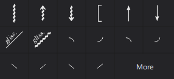
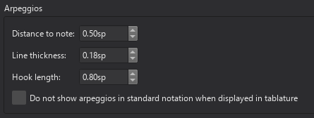
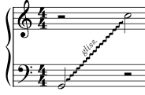
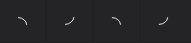

琶音与滑音
琶音、扫弦箭头、滑音（滑动）、滑奏（滑移）、铜管或木管乐器弯音以及吉他技巧：滑入和滑出均可从琶音与滑音面板应用：

其中许多具有可调节的播放效果（参见下文）。
琶音
向乐谱添加琶音/扫弦
要向乐谱添加琶音/扫弦：
- 单击和弦中的任意音符（可以多选）；
- 在面板中单击琶音/扫弦符号。
或者，您可以将琶音/扫弦符号从面板拖动到符头上。
调整琶音/扫弦的高度
单击琶音，符号的顶部和底部会出现两个调整手柄。您可以通过拖动，或选中有手柄后使用键盘上/下方向键，来上下移动任一手柄。
创建多声部或跨谱表琶音
琶音最初只跨越输入时所在的声部，但随后可以调整以跨越同一乐器的多个声部，甚至跨越多条谱表。
要调整琶音以跨越多个声部：
- 选中琶音的顶部或底部手柄
- 按 Shift+Up 或 Shift+Down，将手柄向上或向下移动到下一个相邻声部
手柄会跳到该点上有音符的上方或下方下一个声部。对于多谱表乐器，这包括上方或下方谱表上的声部。
琶音被认为“属于”它所跨越的最上方的声部，并会相应着色。
更改琶音的播放
要更改所选琶音的速度：
- 转到属性面板
- 单击播放
- 在弹出的窗口中，调整铺开延迟属性。
如果您想完全关闭播放：
- 转到属性面板
- 取消勾选播放复选框。
琶音样式
乐谱中所有琶音的默认属性可在样式菜单 格式 -> 样式 -> 琶音 中调整：

滑奏（Portamento）
要在两个音符之间添加滑动或滑奏，请添加一条滑音线并更改其外观和播放设置。
要在音符之前或之后添加滑动或滑奏（弦乐器或吉他技巧），请添加四种铜管或木管乐器弯音之一或吉他技巧：滑入和滑出，另请参阅吉他技巧。替代性的波浪形符号可在主面板中的符号类别中找到，这些符号不影响播放。
滑音（Glissando）
注意：吉他滑音在吉他技巧中介绍。
向乐谱添加滑音
- 选中一个或多个起始音符；
- 在面板中单击所需的滑音图标。将创建一条延伸到同一声部中下一个音符的滑音：

或者，您可以将滑音符号从面板拖动到符头上。
如有必要，滑音可以跨越谱表：

编辑滑音的范围
如有需要，您可以按如下方式更改滑音的起点或终点位置：
- 选中您要更改位置的编辑手柄；
- 按 Shift+Up/Down/Left/Right，沿指定方向一次移动一个音符。
此方法也可用于在声部之间和跨谱表移动编辑手柄。
更改滑音的外观
所选滑音的线型（直线或波浪线）以及与之关联的任何文本，可在属性面板的滑音部分中更改。您也可以通过取消勾选显示文本框来关闭文本。
更改滑音的播放
要更改滑音的播放：
- 转到属性面板
- 单击播放
- 在弹出的窗口中，从样式下拉菜单中选择一个选项。
可用选项为半音、白键、黑键、自然音和滑奏。最后一个选项会在两个音符之间创建滑奏；要添加其他类型的滑动，请参阅上文滑奏。
要完全关闭滑音的播放：
- 转到属性面板
- 取消勾选播放复选框。
滑音属性
属性面板的滑音部分提供以下属性：
- 线型：直线或波浪线。对于直线，还提供以下附加选项：
- 粗细：线条的粗细
- 线样式：连续、虚线或点线
- 显示文本：是否在滑音上方显示文本
- 文本：要显示的文本（默认为“gliss.”）。
只有当有足够空间（即滑音线足够长）时，文本才会显示。
滑音文本的默认样式在 格式 -> 样式 -> 文本样式 下的滑音中定义。
弯音
不要与吉他技巧：弯音混淆。
琶音与滑音面板还包含铜管或木管乐器的弯音符号：

这些符号对乐谱有播放效果。
弯音的类型
四个图标分别代表下滑音（fall）、上滑音（doit）、垂落音（plop）和上挑音（scoop）。（如果您不确定哪个是哪个，将鼠标悬停在面板图标上会显示带有符号名称的工具提示。）下滑音和上滑音位于符头之后，垂落音和上挑音位于符头之前。
向乐谱添加弯音
- 选中一个符头
- 在面板中单击所需的弯音符号。
或者，将弯音符号拖动到乐谱中的符头上。
更改弯音的外观
要更改弯音的形状，请单击它，会出现四个调整手柄。拖动手柄，或单击手柄并按键盘方向键，直到得到您想要的形状。